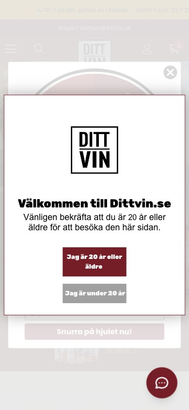
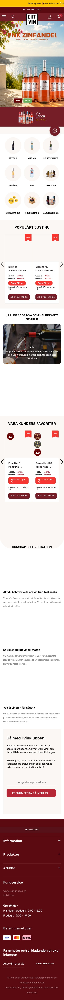
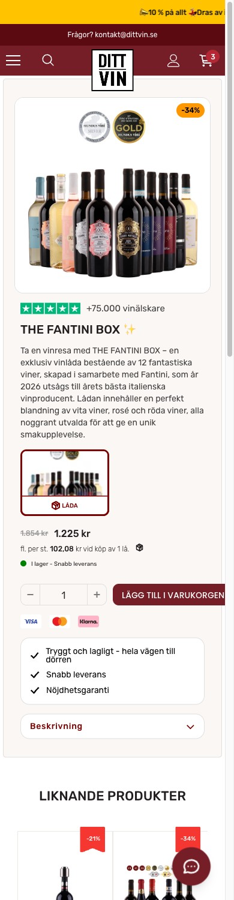

| Metric | dittvin | Benchmark (source) | Verdict |
|---|---|---|---|
| Conversion rate | 3.69% | 1.4% Shopify avg, top 20% over 3.2% (Littledata 2023) | Ahead |
| Average order value | 868 SEK (~$82) | ~$85 Shopify avg, $101 ecom (Littledata 2023) | On par |
| RPV per session | 26 SEK GA4, 73+ true | ~$1.19 Shopify Est. (AOV x CVR, Littledata) | Ahead |
| Cart abandonment | 60% | 70.2% avg of 50 studies (Baymard 2025) | Ahead |
| Returning customer rate | 66% | 15 to 30% ecom repeat is typical (OpenSend, MetricUno 2024) | Ahead |
| Email share of orders | 16% | ~20 to 30% of DTC revenue Est. (Omnisend 2024) | Behind |
| Subscription attach | low | Has 3 tier club; wine clubs 39% of winery DtC (SVB 2025) | Upside |
| Mobile share of traffic | 86% | Mobile converts ~37% below desktop (Littledata 2023) | Upside |
| Device | Sessions | Share | CVR | Revenue (SEK) | Bounce |
|---|---|---|---|---|---|
| Mobile | 388,549 | 85.9% | 2.61% | 10.23M | 41.1% |
| Desktop | 47,604 | 10.5% | 2.25% | 1.21M | 39.4% |
| Tablet | 16,247 | 3.6% | 2.94% | 0.44M | 43.2% |
| Channel (referrer) | Sessions | Share |
|---|---|---|
| Direct | 104,388 | 29.6% |
| Facebook (social) | 86,916 | 24.6% |
| Google (search) | 57,754 | 16.4% |
| Klaviyo (email) | 45,517 | 12.9% |
| Instagram (social) | 29,289 | 8.3% |
| Facebook (direct) | 14,765 | 4.2% |
| Landing page | Sessions | Add to cart | Reached checkout |
|---|---|---|---|
| XL Introlåda (box PDP) | 25,917 | 19.9% | 8.5% |
| Provence rosé box | 8,841 | 20.5% | 7.9% |
| XL smaken av Sydeuropa | 9,336 | 18.5% | 9.1% |
| The Fantini box | 19,131 | 15.7% | 7.3% |
| Homepage / | 57,715 | 12.4% | 6.8% |
| /collections/vinlador | 18,096 | 10.4% | 5.7% |
| Same 90 days | Shopify (truth) | GA4 | GA4 sees |
|---|---|---|---|
| Orders | 38,306 | 11,689 | 31% |
| Gross revenue | 33.3M SEK | 11.9M SEK | 36% |
| Sessions | 336,855 | 452,552 | GA4 +28% |
| AOV | 864 SEK | 1,017 SEK | GA4 overstates |
| Day | Sessions | Orders | Revenue (SEK) |
|---|---|---|---|
| Tuesday | 71,983 | 1,966 | 2.03M |
| Wednesday | 73,018 | 1,748 | 1.78M |
| Sunday | 67,132 | 1,697 | 1.72M |
| Monday | 64,807 | 1,691 | 1.70M |
| Thursday | 58,285 | 1,661 | 1.69M |
| Friday | 63,686 | 1,610 | 1.61M |
| Saturday | 52,838 | 1,316 | 1.36M |
14% of complaints are about taste, and buyers ask for the information outright. A box of 12 unknown wines is a leap of faith, so price and discount become the only decision cues.
Zero mention of Systembolaget, private import, Swedish alcohol tax, or that VAT is included. The Danish operator identity is buried in the footer. The genuine assets (a 4.7 Trustpilot, award medals, Løvens Hule TV backing) sit far from the point of doubt.
"Vi lyder under den svenska alkohollagstiftningen och regleras av svenska Skatteverket som distansförsäljare." Winefamly reassures with "Alla priser inkl. svensk alkoholskatt & moms." Winefinder, Winefamly and Supervin also show the Trygg E-handel trust mark. dittvin shows none of it.
Destroy it with a plain language legality block: lawful Danish private import, age verified, Vinhuset ApS named, tax and VAT included, and the 4.7 on 5,985 Trustpilot proof placed at the point of hesitation.
34% of buyers are brand newThis is the true belief driving the negative tail. Destroy it by fixing the promise, not the wine. Replace "1-3 dagar" with an honest order specific ETA and proactive status updates, and let customers pick a delivery window.
86% of complaints are deliveryDestroy it with real per wine specs on box PDPs: grape, region, a dry to sweet scale, and the Vivino score you already hold. A box should not be a blind gamble.
14% of complaints cite taste


| Capability | dittvin | Winefinder | Winefamly | KRAN | Supervin | Systembolaget |
|---|---|---|---|---|---|---|
| Legality / tax messaging | None | Trygg mark | Tax stated | Skatteverket stated | CVR + Trygg | Is the channel |
| Trygg E-handel badge | No | Yes | Yes | No | Yes | N/A |
| Delivery cost / speed shown | Vague, Airmee only | Carriers named | Home delivery | Not stated | From 29 kr, 2-5 days | Multiple |
| Subscription | Yes | No | Boxes | Release club | No | No |
| Wine boxes / cases | Yes | Yes | Yes | Yes | Yes | No |
| Reviews merchandised | Vivino + medals | Critic + stars | Not shown | Press quotes | Trustpilot embed | None |
| Alcohol free range | Yes | Not shown | Yes | Not shown | Yes | Yes |
| Filtering / search | Basic | Faceted + Vinprofil | Category | Minimal | Category | Food pairing |
The category's top objection, and only KRAN answers it (buried in text). A friendly, visible "why this is legal" module would out reassure everyone.
Biggest wedgeThree of four direct rivals show the Swedish trust mark. dittvin leans on a Danish TV endorsement that carries less "safe Swedish shop" signal.
Quick winSupervin states "from 29 kr, free over 999, 2-5 days". dittvin says only "snabb" with a caveated 695 kr Airmee threshold. Concrete beats vague.
Trust + clarityDanish product types and page titles leak through ("Kjøb", "Smagekasser"). It reads un Swedish and hurts both trust and discovery.
Polishdittvin holds award medals, Vivino scores and 4.7 Trustpilot but relies on a blanket 10% off. Own "curated wines at honest prices, with the proof".
Positioningdittvin already has subscription plus boxes. Winefinder and Supervin have no subscription at all. Own "the recurring discovery box for everyday Swedes".
Defensible| Metric (Shopify, 90 days) | Value | Note |
|---|---|---|
| Orders | 38,306 | 31,860 customers |
| Gross sales | 33.3M SEK | ex VAT, discounts, refunds |
| Total sales incl VAT + shipping | 41.5M SEK | money collected |
| Net sales | 31.7M SEK | recognised revenue |
| AOV | 864 SEK | gross / orders |
| Segment | Units 91d | Share of net sales | Avg price | Realized discount |
|---|---|---|---|---|
| Tasting boxes (vinlådor) | 43,617 | 76.3% | 567 SEK | 1.2% |
| Single red bottles | 11,396 | 12% | ~400 SEK | 18.4% |
| Premium boxes (Grill, Guld, Deluxe) | 2,668 | 7% | 700 to 865 SEK | 2 to 5% |
| Subscription (3 tiers) | live | low attach | 749-849 SEK | 0% |
| # | Lever | Move | Why it moves RPV | Effort |
|---|---|---|---|---|
| 1 | Measurement | Server side GTM + Consent Mode modeling + Meta CAPI; consolidate to one GA4 | Unlocks true RPV and feeds the ad algorithms 3x the conversion signal, lifting ROAS on the same spend | High |
| 2 | Subscription | Grow the existing subscription (Wine, Gin, Champagne 749-849 SEK): merchandise it, add attach at PDP and checkout | Repeat is already strong (66%); a bigger subscription base turns it into predictable recurring RPV | Med |
| 3 | AOV ladder | Anchor and upsell 567 SEK buyers to 700 SEK+ boxes; Rebuy cart attach; tune free ship threshold | Boxes are 76% of revenue; moving box tier and attach rate lifts the AOV half of RPV without new traffic | Med |
| 4 | Conversion | Legality trust block + honest delivery promise + cart shipping clarity (core audit P0) | Lifts the conversion half of RPV, especially for the 80% who are first time buyers | Med |
| 5 | Traffic mix | Grow email/owned (13% to 20%+ of sessions) and search; balance the paid social mix | Higher quality, cheaper owned traffic raises blended RPV and de risks paid social dependence | Strategic |
| Where | Test / Fix | Hypothesis | Evidence | Est. Impact |
|---|---|---|---|---|
| Global / PDP / Cart | Add a plain language legality trust block (lawful Danish import, tax included, age verified, Trustpilot 4.7) | Neutralizing the monopoly doubt lifts first time buyer add to cart and checkout | Zero on-site legality copy; fraud language in reviews; KRAN and Winefamly reassure | High |
| Delivery promise | Replace "1-3 dagar" with an honest order specific ETA and proactive status updates | An accurate promise cuts the negative tail and protects repeat revenue | 86% of complaints, 31% cite the broken promise, repeat buyers churning | High |
| Cart to checkout | Surface shipping rule and free ship threshold in cart, add a clear continue step | Removing the shipping surprise recovers the largest abandonment pool | 60.2% cart abandonment, 32,859 users/90 days; free ship confusion in reviews | 1.5 to 1.8M SEK/qtr (Est.) |
| Where | Test / Fix | Hypothesis | Evidence | Est. Impact |
|---|---|---|---|---|
| Checkout | Diagnose and clear the JS console errors, verify payment path on mobile Safari | Removing checkout errors recovers the highest intent, cheapest audience | 46.9% checkout abandonment; 90+ JS errors per load | High |
| Box PDP | Add per wine detail: grape, region, dry to sweet scale, Vivino score, more images | Turning a blind box into an informed pick lifts add to cart and cuts taste complaints | "Jag saknar en beskrivning av respektive vin"; 14% taste complaints; 3 images only | Med to High |
| Delivery UX | Let customers choose a delivery day/window, align carrier expectations | Solving the be home problem reduces cancellations and 1 to 3 star reviews | 23% cite the cancelled window / be home problem | Med |
| Collection | Box first layout, stronger faceted filtering (grape, sweetness, occasion) | Better discovery lifts the collection page from 2.6% toward box level CVR | Collection 2.6% vs boxes 4 to 5.5%; requests for a sortable list | Med |
| Where | Test / Fix | Hypothesis | Evidence | Est. Impact |
|---|---|---|---|---|
| Entry | Merge age gate and spin wheel into one step, remember the choice | One clean gate reduces entry friction on cold paid traffic | Double interstitial verified on mobile; 41% cold Facebook traffic | Med |
| Tracking | Fix homepage conversion tag, consolidate to one GA4, remove dead UA | Clean data improves ad optimization and decision quality | Conversion on pageview; 4 GA4 + dead UA verified | High (data) |
| Trust marks | Add Trygg E-handel, surface Danish operator and Løvens Hule higher up | Recognized Swedish trust marks lift legitimacy for new buyers | 3 of 4 rivals show Trygg; assets buried in footer | Med |
| Localization | Remove Danish leaks ("Kjøb", "Smagekasser") and the stray .dk Trustpilot widget | Full Swedish polish removes trust dissonance | Danish page title + .dk widget shown to Swedes | Low |
| Owned channels | Grow Klaviyo and search to balance the ~29% paid social share | Diversified demand de risks the whole business | Paid social ~29% of sessions; email ~13% and growable | Strategic |